USGS/SLU Moment Tensor Solution
ENS 2020/11/08 14:10:07:0 41.53 -70.97 15.1 4.0 Massachusetts
Stations used:
IU.HRV LD.BRNJ LD.FLET LD.KSCT LD.MCVT LD.NCB LD.ODNJ
LD.PAL LD.UNH N4.H62A N4.J59A N4.J61A N4.K62A N4.L61B
N4.L64A N4.M63A N4.N62A NE.BCX NE.TRY NE.WES NE.WSPT
US.LBNH
Filtering commands used:
cut o DIST/3.3 -40 o DIST/3.3 +50
rtr
taper w 0.1
hp c 0.03 n 3
lp c 0.10 n 3
br c 0.12 0.25 n 4 p 2
Best Fitting Double Couple
Mo = 3.39e+21 dyne-cm
Mw = 3.62
Z = 7 km
Plane Strike Dip Rake
NP1 214 52 102
NP2 15 40 75
Principal Axes:
Axis Value Plunge Azimuth
T 3.39e+21 79 174
N 0.00e+00 10 27
P -3.39e+21 6 296
Moment Tensor: (dyne-cm)
Component Value
Mxx -4.98e+20
Mxy 1.29e+21
Mxz -7.96e+20
Myy -2.73e+21
Myz 3.75e+20
Mzz 3.22e+21
-------------#
-------------------###
------------------#####-----
----------------#########-----
---------------#############------
------------################------
P ----------##################-------
- ---------####################-------
-----------######################-------
-----------#######################--------
----------########################--------
----------########## ##########---------
---------########### T ##########---------
--------########### ##########--------
-------########################---------
------#######################---------
-----######################---------
----#####################---------
--###################---------
--################----------
#############---------
####----------
Global CMT Convention Moment Tensor:
R T P
3.22e+21 -7.96e+20 -3.75e+20
-7.96e+20 -4.98e+20 -1.29e+21
-3.75e+20 -1.29e+21 -2.73e+21
Details of the solution is found at
http://www.eas.slu.edu/eqc/eqc_mt/MECH.NA/20201108141007/index.html
|
STK = 15
DIP = 40
RAKE = 75
MW = 3.62
HS = 7.0
The NDK file is 20201108141007.ndk The waveform inversion is preferred.
The following compares this source inversion to others
USGS/SLU Moment Tensor Solution
ENS 2020/11/08 14:10:07:0 41.53 -70.97 15.1 4.0 Massachusetts
Stations used:
IU.HRV LD.BRNJ LD.FLET LD.KSCT LD.MCVT LD.NCB LD.ODNJ
LD.PAL LD.UNH N4.H62A N4.J59A N4.J61A N4.K62A N4.L61B
N4.L64A N4.M63A N4.N62A NE.BCX NE.TRY NE.WES NE.WSPT
US.LBNH
Filtering commands used:
cut o DIST/3.3 -40 o DIST/3.3 +50
rtr
taper w 0.1
hp c 0.03 n 3
lp c 0.10 n 3
br c 0.12 0.25 n 4 p 2
Best Fitting Double Couple
Mo = 3.39e+21 dyne-cm
Mw = 3.62
Z = 7 km
Plane Strike Dip Rake
NP1 214 52 102
NP2 15 40 75
Principal Axes:
Axis Value Plunge Azimuth
T 3.39e+21 79 174
N 0.00e+00 10 27
P -3.39e+21 6 296
Moment Tensor: (dyne-cm)
Component Value
Mxx -4.98e+20
Mxy 1.29e+21
Mxz -7.96e+20
Myy -2.73e+21
Myz 3.75e+20
Mzz 3.22e+21
-------------#
-------------------###
------------------#####-----
----------------#########-----
---------------#############------
------------################------
P ----------##################-------
- ---------####################-------
-----------######################-------
-----------#######################--------
----------########################--------
----------########## ##########---------
---------########### T ##########---------
--------########### ##########--------
-------########################---------
------#######################---------
-----######################---------
----#####################---------
--###################---------
--################----------
#############---------
####----------
Global CMT Convention Moment Tensor:
R T P
3.22e+21 -7.96e+20 -3.75e+20
-7.96e+20 -4.98e+20 -1.29e+21
-3.75e+20 -1.29e+21 -2.73e+21
Details of the solution is found at
http://www.eas.slu.edu/eqc/eqc_mt/MECH.NA/20201108141007/index.html
|
Regional Moment Tensor (Mwr)
Moment 2.987e+14 N-m
Magnitude 3.58 Mwr
Depth 7.0 km
Percent DC 91%
Half Duration -
Catalog US
Data Source US 2
Contributor US 2
Nodal Planes
Plane Strike Dip Rake
NP1 203 59 98
NP2 8 32 77
Principal Axes
Axis Value Plunge Azimuth
T 2.916e+14 N-m 75 136
N 0.137e+14 N-m 7 19
P -3.053e+14 N-m 13 288
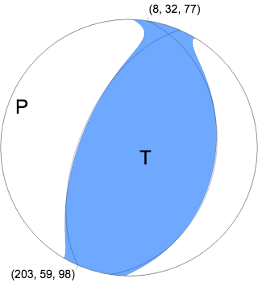
|
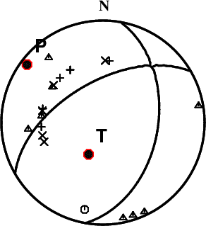 |
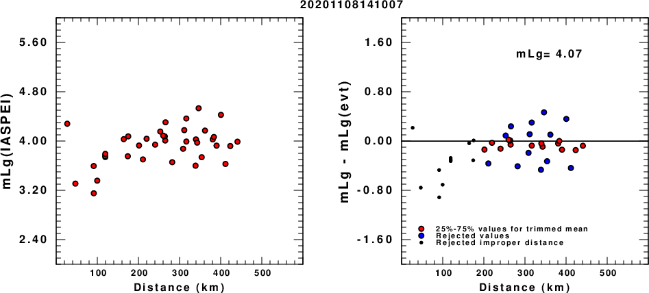
(a) mLg computed using the IASPEI formula; (b) mLg residuals ; the values used for the trimmed mean are indicated.
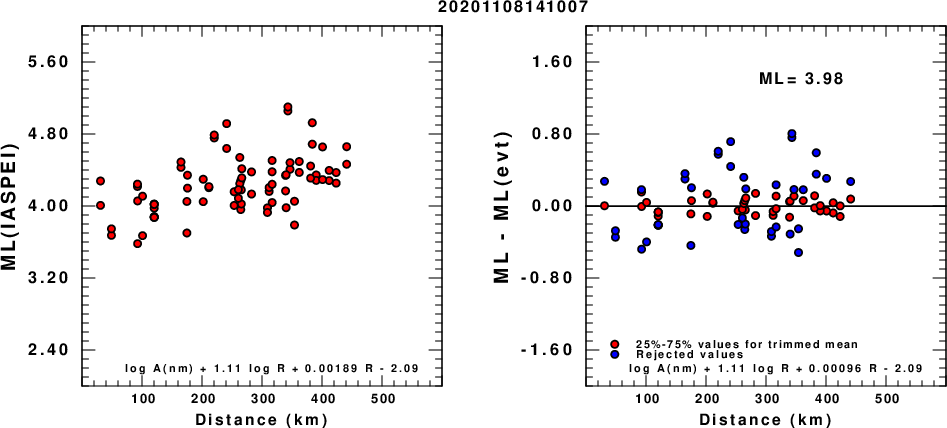
(a) ML computed using the IASPEI formula for Horizontal components; (b) ML residuals computed using a modified IASPEI formula that accounts for path specific attenuation; the values used for the trimmed mean are indicated. The ML relation used for each figure is given at the bottom of each plot.
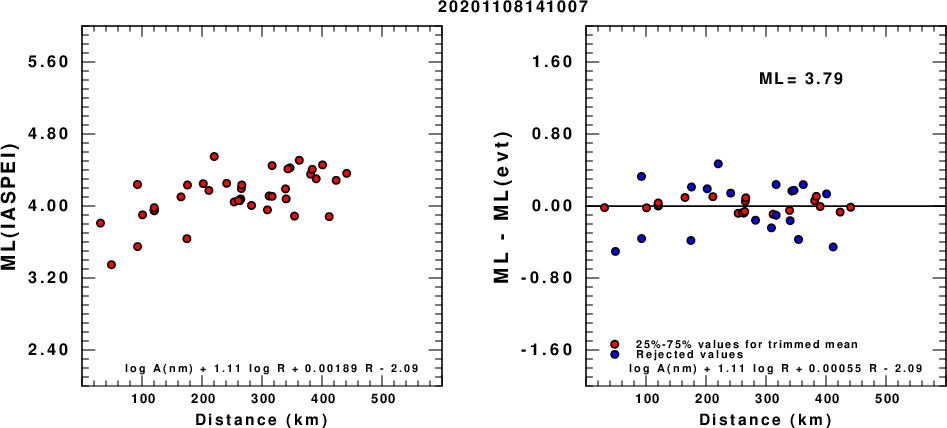
(a) ML computed using the IASPEI formula for Vertical components (research); (b) ML residuals computed using a modified IASPEI formula that accounts for path specific attenuation; the values used for the trimmed mean are indicated. The ML relation used for each figure is given at the bottom of each plot.
|
The focal mechanism was determined using broadband seismic waveforms. The location of the event and the and stations used for the waveform inversion are shown in the next figure.
| 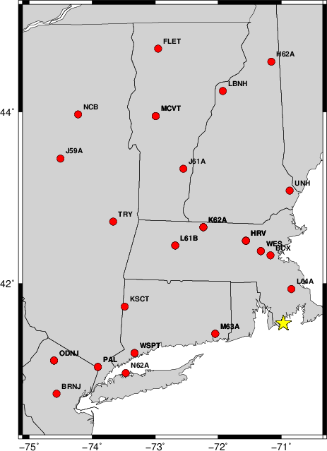 |
|
|
The program wvfgrd96 was used with good traces observed at short distance to determine the focal mechanism, depth and seismic moment. This technique requires a high quality signal and well determined velocity model for the Green functions. To the extent that these are the quality data, this type of mechanism should be preferred over the radiation pattern technique which requires the separate step of defining the pressure and tension quadrants and the correct strike.
The observed and predicted traces are filtered using the following gsac commands:
cut o DIST/3.3 -40 o DIST/3.3 +50 rtr taper w 0.1 hp c 0.03 n 3 lp c 0.10 n 3 br c 0.12 0.25 n 4 p 2The results of this grid search from 0.5 to 19 km depth are as follow:
DEPTH STK DIP RAKE MW FIT
WVFGRD96 1.0 185 60 60 3.48 0.4580
WVFGRD96 2.0 195 60 70 3.54 0.4560
WVFGRD96 3.0 200 70 45 3.57 0.4459
WVFGRD96 4.0 340 40 20 3.52 0.4591
WVFGRD96 5.0 5 35 65 3.60 0.5039
WVFGRD96 6.0 15 35 75 3.61 0.5454
WVFGRD96 7.0 15 40 75 3.62 0.5632
WVFGRD96 8.0 15 40 75 3.61 0.5629
WVFGRD96 9.0 5 45 60 3.59 0.5533
WVFGRD96 10.0 5 45 60 3.60 0.5496
WVFGRD96 11.0 0 45 55 3.59 0.5398
WVFGRD96 12.0 -5 50 45 3.57 0.5323
WVFGRD96 13.0 0 50 50 3.58 0.5263
WVFGRD96 14.0 -5 55 45 3.58 0.5201
WVFGRD96 15.0 145 50 -45 3.59 0.5160
WVFGRD96 16.0 145 50 -40 3.59 0.5130
WVFGRD96 17.0 145 50 -40 3.59 0.5098
WVFGRD96 18.0 145 50 -40 3.60 0.5061
WVFGRD96 19.0 145 50 -40 3.61 0.5021
WVFGRD96 20.0 145 50 -40 3.63 0.5012
WVFGRD96 21.0 145 50 -40 3.63 0.4962
WVFGRD96 22.0 140 50 -45 3.65 0.4905
WVFGRD96 23.0 140 50 -45 3.65 0.4841
WVFGRD96 24.0 165 55 30 3.63 0.4786
WVFGRD96 25.0 160 55 25 3.64 0.4742
WVFGRD96 26.0 160 50 20 3.65 0.4695
WVFGRD96 27.0 160 50 20 3.66 0.4642
WVFGRD96 28.0 160 50 20 3.66 0.4588
WVFGRD96 29.0 160 50 20 3.67 0.4525
The best solution is
WVFGRD96 7.0 15 40 75 3.62 0.5632
The mechanism correspond to the best fit is
| 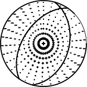 |
|
|
The best fit as a function of depth is given in the following figure:
| 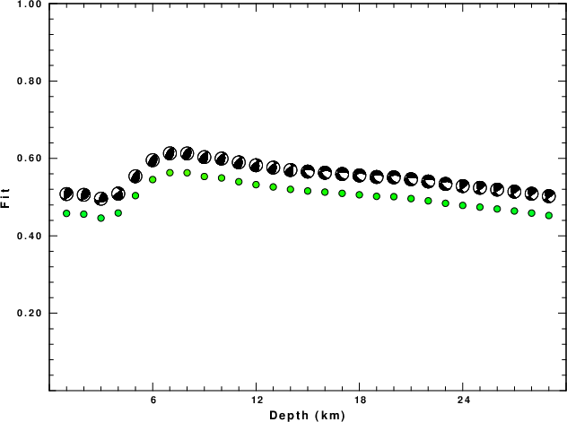 |
|
|
The comparison of the observed and predicted waveforms is given in the next figure. The red traces are the observed and the blue are the predicted. Each observed-predicted component is plotted to the same scale and peak amplitudes are indicated by the numbers to the left of each trace. A pair of numbers is given in black at the right of each predicted traces. The upper number it the time shift required for maximum correlation between the observed and predicted traces. This time shift is required because the synthetics are not computed at exactly the same distance as the observed and because the velocity model used in the predictions may not be perfect. A positive time shift indicates that the prediction is too fast and should be delayed to match the observed trace (shift to the right in this figure). A negative value indicates that the prediction is too slow. The lower number gives the percentage of variance reduction to characterize the individual goodness of fit (100% indicates a perfect fit).
The bandpass filter used in the processing and for the display was
cut o DIST/3.3 -40 o DIST/3.3 +50 rtr taper w 0.1 hp c 0.03 n 3 lp c 0.10 n 3 br c 0.12 0.25 n 4 p 2
| 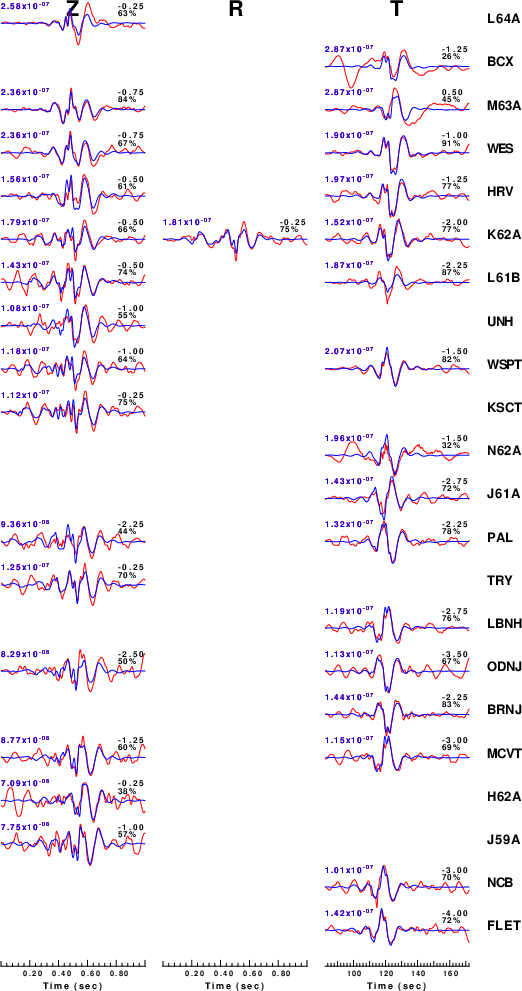 |
|
|
| 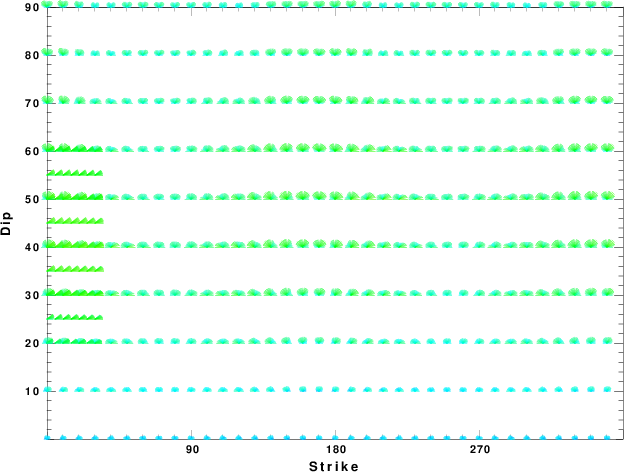 |
| Focal mechanism sensitivity at the preferred depth. The red color indicates a very good fit to thewavefroms. Each solution is plotted as a vector at a given value of strike and dip with the angle of the vector representing the rake angle, measured, with respect to the upward vertical (N) in the figure. |
A check on the assumed source location is possible by looking at the time shifts between the observed and predicted traces. The time shifts for waveform matching arise for several reasons:
Time_shift = A + B cos Azimuth + C Sin Azimuth
The time shifts for this inversion lead to the next figure:
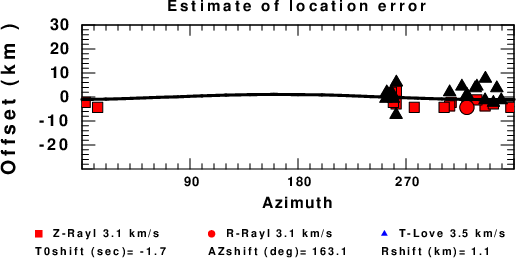
The derived shift in origin time and epicentral coordinates are given at the bottom of the figure.
Thanks also to the many seismic network operators whose dedication make this effort possible: University of Nevada Reno, University of Alaska, University of Washington, Oregon State University, University of Utah, Montana Bureau of Mines, UC Berkely, Caltech, UC San Diego, Saint Louis University, University of Memphis, Lamont Doherty Earth Observatory, the Oklahoma Geological Survey, TexNet, the Iris stations, the Transportable Array of EarthScope and other networks.
The CUS.model used for the waveform synthetic seismograms and for the surface wave eigenfunctions and dispersion is as follows:
MODEL.01 CUS Model with Q from simple gamma values ISOTROPIC KGS FLAT EARTH 1-D CONSTANT VELOCITY LINE08 LINE09 LINE10 LINE11 H(KM) VP(KM/S) VS(KM/S) RHO(GM/CC) QP QS ETAP ETAS FREFP FREFS 1.0000 5.0000 2.8900 2.5000 0.172E-02 0.387E-02 0.00 0.00 1.00 1.00 9.0000 6.1000 3.5200 2.7300 0.160E-02 0.363E-02 0.00 0.00 1.00 1.00 10.0000 6.4000 3.7000 2.8200 0.149E-02 0.336E-02 0.00 0.00 1.00 1.00 20.0000 6.7000 3.8700 2.9020 0.000E-04 0.000E-04 0.00 0.00 1.00 1.00 0.0000 8.1500 4.7000 3.3640 0.194E-02 0.431E-02 0.00 0.00 1.00 1.00
Here we tabulate the reasons for not using certain digital data sets
The following stations did not have a valid response files: